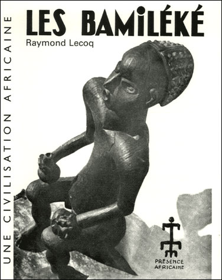

Origine des Bamiléké
Descendants des Baladis partis de l’Égypte au IXe siècle de notre ère, les Bamilékés arrivèrent en région tikar vers le milieu du XIIe siècle avant de se diviser vers 1360 à la mort de leur dernier souverain unique, le roi Ndeh Yende, premier prince, refusa le trône et traversa le Noun pour fonder Bafoussam. Sa sœur se tourna vers la région de Banso (il existe près d’une trentaine de villages bamilékés dans le Nord-Ouest anglophone, ndlr). Deux décennies plus tard, Nchare, le cadet, descendit dans la plaine du Noun pour fonder le pays Bamoun. De Bafoussam, qui, avait jadis une superficie de 6203 km2, pour 1.182.686 habitants répartis dans 7 départements, 32 arrondissements et 32 communes, naquirent quasiment tous les autres groupements Bamilékés connus entre le XVe siècle et le XXe siècle.

Le peuple Bandjoun
L'État de Bandjoun (en homalah : Gouong ha Djo), plus communément appelé Bandjoun (issu de l'expression coloniale Ba djo) est un ancien état d'Afrique centrale situé dans ce qui correspond aujourd'hui à l'actuelle région de l'Ouest du Cameroun. Il fut fondé au XVIe siècle par le prince Notchweghom alors exilé avec sa cour à la suite de son éviction de la succession royale de Leng. Sous le règne des héritiers de Notchwegom, le Bandjoun s'imposa comme une des puissances majeures du Grassland. De sa fondation jusqu'au règne de Fotso II, le royaume s’engagea dans une politique impérialiste où nombre d'États voisins furent soumis et annexés. Ce projet d'hégémonie sur la vallée du Noun s’interrompit subitement avec l'arrivée des Européens à la fin du xixe siècle. Radicalement opposé à la tentative de christianisation des Grassfields par les missionnaires protestants puis catholiques, le Bandjoun devint la cible principale des puissances colonisatrices. À la mort du Fô Fotso II, un coup d’État soutenu par l'armée française chassa le successeur désigné Bopda et installa son demi-frère Kamga Joseph Manewa, baptisé et fidèle à l'Empire colonial, sur le trône. Suivant ce bouleversement politique, Bandjoun s’engagea aux côtés du régime d'Ahidjo et de la France contre les insurgés de l'UPC. Au lendemain de la guerre du Cameroun, le pays désormais plus reconnu comme tel car rattaché au Cameroun nouvellement indépendant, connut une révolution sociale et une décadence au cours de laquelle le christianisme se développa au détriment des anciennes traditions entraînant une progressive disparition des savoirs ancestraux.
dirigées par des "Fo".
Organisation traditionnelle
La fonction de Roi (vulgairement appelé chef traditionnel) chez les Bamilékés se caractérise de la façon suivante. Dans un groupement donné de la province de l'Ouest au Cameroun, le « fo » (roi ou chef supérieur) a des pouvoirs assez étendus au plan mystico-religieux et administratif. Le « fo » est le symbole de l'unité et de la force du peuple. Mais au plan de la communication avec les ancêtres et Dieu, c'est presque toujours le Conseil suprême de notables (le Conseil des neuf) qui en a la prérogative ; avec à la clef, le rôle proéminent du dignitaire qui accède au Néfam, le panthéon des défunts chefs de la dynastie[1]. Les rois bamiléké sont généralement désignés par le nom de Namtchema (lion), ou autres noms de louange tels que « mbelong » ou autres, « ô dze », « din toue gouon », etc., ou même par des entités totémiques qu'ils possèdent. En général, les « fo » jouissent de pouvoirs temporels et spirituels après leur séjour d’initiation de neuf semaines dans la case initiatique, le Lâ'kam. Dans le langage traditionnel, le roi ne meurt pas ; il retourne au royaume de ses ancêtres. Par ailleurs, il est le maître de la terre, à condition de préserver le droit d’usage à tous. Du fait du grand respect qui lui est voué, le « fo » est en principe celui auquel sont destinés gros gibiers (buffles, phacochères, félins…), peaux de félins, statues d'envergure, tabourets multipodes ou sertis de pièces d'argent, défenses d'éléphants, dents de rhinocéros et de lion, etc. Dans la société bamiléké, le roi est considéré "invraisemblablement" comme le plus fort à tous égards dans la communauté ; et à ce titre, la plupart des sorciers, magiciens, médiums, devins guérisseurs partagent avec lui leurs puissances pendant son séjour au Lâ'kam, tout en volant à son secours si besoin.

Langue parlée
Le peuple Bandjoun parle principalement le Ghomálá’, une langue Bamiléké qui permet de transmettre les traditions, les proverbes et l’histoire du peuple. Le ghomalaʼ est parlé au Cameroun, dans des départements de la région de l'Ouest : La tribu Bandjoun (peuple Bamiléké) parle le Ghomala' (ou Ghɔmálá?), plus précisément la variante dialectale du centre connue sous le nom de Jo ou Bandjoun. C'est une langue bantoue de l'Ouest du Cameroun, utilisée quotidiennement et dans les traditions.